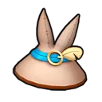

Chapéu de Ostara
Chapéu de mágico · Tier 5 · Nível 14
Às vezes as orelhas coçam.
Atributos
Ataque
19
Defesa
76
Economia
Valor
14.000
Tempo de fabricação
28min
XP do comerciante
11.500
Trabalhadores: Alfaiate 11, Feiticeiro 4
Receita


Marcos do projeto
7
Tempo de fabricação -25%
16
-12 Couro
30
Valor +25%
45
-3 Ervas
70
Chance de qualidade +1